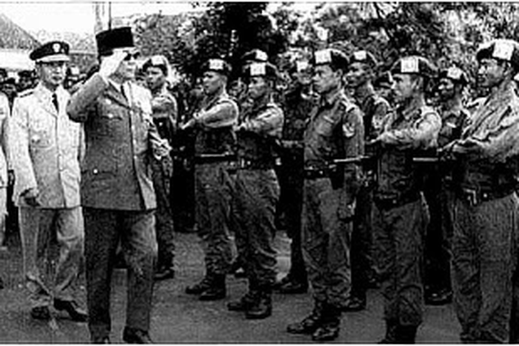

Demokrasi Terpimpin (1959-1966)
Demokrasi terpimpin terjadi pada tahun 1959 sampai 1966 yaitu ketika Indonesia menerapkan sistem pemerintahan dimana seluruh keputusan berpusat pada kepala negara. Kepala negara yang berkuasa pada saat itu adalah Soekarno. Soekarno, presiden pertama Indonesia menunjukkan gejala ketidaksenangannya pada partai politik sejak berakhirnya pemilu 1955 karena partai politik sangat berorientasi pada kepentingan ideologinya sendiri. Partai politik juga kurang memperhatikan kepentingan politik nasional secara menyeluruh. Soekarno melontarkan gagasan bahwa demokrasi parlementer tidak sesuai dengan kepribadian bangsa Indonesia yang dijiwai semangat kekeluargaan dan gotong royong
|
 |
Ciri-ciri dari demokrasi terpimpin :
- Dominasi Kekuatan Politik di Tangan Presiden
Menurut buku yang berjudul "Ilmu Hukum Tata Negara" kedudukan MPRS pada masa demokrasi terpimpin berada di bawah Presiden. Oleh karena itu, MPR dan MPR wajib tunduk melakukan apa yang diharuskan oleh presiden. Meskipun jika merujuk pada UUD 1945, kedudukan presiden berada di bawah MPR. Hal tidak sejalan lainnya adalah penetapan Ir. Soekarno sebagai Presiden seumur hidup oleh MPRS.
- Pembatasan Hak Politik Rakyat
Kepemimpinan Presiden Soekarno tanpa batas mengakibatkan kebijakan yang menyimpang dari UUD 1945. Contohnya, presiden soekarno mebubarkan DPR hasil pemilihan umum dan menggantinya menjadi DPR Gotong Royong (DPR GR). Jadi anggota DPR bergantung dengan presiden karena diberhentikan dan diangkat oleh presiden. Selain itu, kebijakan kooptasi dan pembubaran partai politik beserta organisasi kemasyarakatannya mengakibatkan batasan hak politik pada masyarakat. Kebijakan tersebut dibuat dengan alasan menciptakan stabilitas politik dengan memusatkan kekuasaan.
- Munculnya Partai Penguasa/ Partai Mayoritas
Hilangnya kontrol sosial dari dari lembaga legislatif terhadap lembaga eksekutif semakin parah dengan peranan partai mayoritas. Partai politik yang saat itu mendominasi kehidupan politik Indonesia adalah Partai Komunis Indonesia (PKI).
- Semakin Besar Peranan Militer dalam Dwifungsi ABRI
Sebagai tindak lanjut dari Dekrit Presiden, pimpinan nasional TNI-AD mengeluarkan perintah harian untuk mengamankan Dekrit. TNI dan Polri disatukan pada tahun 1946. Hal tersebut membuat Presiden Soekarno untuk menciptakan kondisi unggul-mengungguli baik antar angkatan maupun TNI dengan partai politik. Oleh karena itu, fungsi ABRI semakin luas hingga fungsi pada politik Indonesia.
- Politik Luar negeri Oldefo-Nefo
Negara membagi kekuatan politik dunia menjadi dua yaitu Oldefo dan Nefo. Oldefo (Old Established Forces) merujuk pada kekuatan lama yang telah mapan yakni negara-negara kapitalis yang neokolonialis dan imperialis. Sedangkan Nefo (New Emerging Forces) , yaitu kekuatan baru.
|
Sistem demokrasi terpimpin memiliki beberapa kelebihan. Salah satunya adalah stabilitas politik karena kekuasaan terpusat pada pemimpin atau kelompok kecil yang mengakibatkan keputusan yang diambil lebih cepat dan efesien tanpa perlu melalui proses panjang dan rumit. Selain itu, pengambilan keputusan juga efektif karena pemimpin atau kelompok yang dianggap memahami kebutuhan dan aspirasi rakyat memiliki kekuasaan yang signifikan dalam pengambilan keputusan dan memungkinkan berbuat kebijakan dengan cepat dan efektif dalam memberi kebutuhan masyarakat. Sistem demokrasi terpimpin menempatkan penekanan yang kuat pada pencapaian tujuan sosial dan ekonomi yang dianggap penting bagi masyarakat. Hal ini merupakan upaya untuk mengurangi kesenjangan sosial dan meningkatkan kesejahteraan masyarakat secara umum.
|
Meskipun sistem demokrasi terpimpin ini memiliki banyak keunggulan, sistem ini tidak luput dari kelemahan. Kurangnya kebebasan politik pada sistem demokrasi terpimpin merupakan salah satu kelemahannya. Demokrasi terpimpin membatasi kebebasan politik, termasuk kebebasan pers dan berpendapat untuk melindungi pemerintahan dalam. Selain itu, kekuasaan cenderung terpusat pada pemimpin atau kelompok kecil yang berkuasa. Hal ini dapat menyebabkan konsentrasi kekuatan politik dan ekonomi yang tidak sehat, yang dapat mengarah pada penyalahgunaan kekuasaan dan korupsi.
|
Penyimpangan Demokrasi terpimpin :
- Otoritarianisme
Tumbuhnya sistem yang otoriter di mana pemimpin atau kelompok kecil yang berkuasa mengendalikan dan membatasi kebebasan individu, hak-hak politik, dan kebebasan berpendapat. Kritik terhadap pemerintah dapat ditindas, oposisi politik dihancurkan, dan hak-hak asasi manusia dilanggar.
- Pembatasan kebebasan
Contohnya kebebasan berpendapat, kebebasan pers, dan kebebasan berserikat.
- Manipulasi politik
Pemimpin atau kelompok yang berkuasa dapat memanipulasi proses politik, pemilihan umum, dan lembaga-lembaga negara untuk mempertahankan dan memperluas kekuasaan mereka. Hal ini bisa melibatkan pengaturan hasil pemilihan, pelarangan partai politik oposisi, atau penggunaan kekuatan negara untuk menghancurkan lawan politik.
- Korupsi
Ketidaktransparanan dan konsentrasi kekuasaan yang tinggi dapat memberikan peluang bagi korupsi yang melibatkan pejabat pemerintah, pemimpin politik, dan kelompok elit yang berkuasa. Hal ini dapat merusak integritas sistem politik dan merugikan masyarakat secara ekonomi.
|